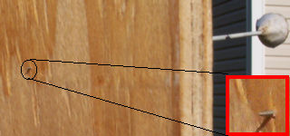

Letters to the Editor and Feedback

|
Rough Road
Rating = Excellent Christian Butterbach PS: Maybe because I am in a similar situation... :-) Thank you. Reades may want to take a look at Christian's website, www.butterbach.net; interesting "exterritorial" information.
Rating = Average For the computer issue, I'll tell you how I got mine. I went around and scavenged parts from the trash behind used computer stores. Out of that I managed to build a k6-450 with motherboard, 128 mb of memory, a 12 gig hard drive (with a lot of bad clusters, but useable nevertheless), modem and I found a slightly discolored 21-inch monitor, which I had to fashion a special cable for, keyboard, tons of mice, install CDs. The only thing I couldn't find was a graphics card, but I only looked around the trash a couple of times. Companies are notoriously stupid about letting go of working equipment. I'm sure if I had more than just minimal knowledge of electronics, I could build a computer out of just about anything that is left around. Shit, if you would like to research this idea, go around dumpster diving and see what you find or can build, it might make a good article, because obviously it's one of the most untraceable ways to obtain stuff. A lot of people I know of steal stuff from the dropoff point at goodwill(that IS illegal). If you can get into the city easily enough, there's a lot of potential for making money rebuilding computers that were thrown out. Palettes are thrown out regularly from Walmart and if you can repair them they're worth about $15.00 a piece. I'm sure a nice circuit could be made around town to pick up "valuable" trash. At the very least, its a good way to receive raw material, such as metal sheets and scraps to melt down into guns, ammunition, name it. The police in my area told me it wasn't illegal, but it would be nice to ask the businessowner first... Unfortunately, I moved out into the sticks, so now it's next to impossible for me to drive around town collecting such stuff. I'm sure that some manufacturing plants throw out brand new equipment because it came off the assembly line defective, but if you can find two or three defectives, and you know some electronics, it may be possible to build a completely working product from the defectives, or at least scavenge for circuits to use in your own projects.
I do dumpster dive regularly. You wouldn't believe some of the things I've gotten that way. But when the computer died just five days before DF!'s publishing deadline, that wasn't a practical way to get the magazine out on time.
Rating = Good You might also want to check out these articles: - Carl
Rating = Excellent Write more, the Peoples' Collective demands it!
Thank you. I think. ;^)
Rating = Good Stephen P. Wenger
Victim disarmament laws make it impossible for some people to always carry their firearms in exactly the same fashion day in and day out. Training (which Sunni did discuss) and situational awareness can overcome any tendency to reach for the wrong location. I've confused myself regarding which pocket I put my keys in, but I've never reached for the wrong carry position for my handgun.
Rating = Average You really need to address this question to a attorney who specializes in business law and is familiar with your specific situation.
If you do choose to use the state against itself (in part; ie- using incorporated status for tax advantages), I think "incorporation" and "self incorporation" differ in the ownership; "self incorporation" seems to be for sole proprietors.
Rating = Average
I don't use IM myself, so I don't know the various text limits. But there are still techniques that might work. Try using a 1024 bit key; I encrypted a five line test message to a packet of 791 bytes, which I expect is within most IM limits. And by opting for PGP's "conventional" encryption, I got a 391 byte package with the same test message. Sure, it's less secure, but it's probably sufficient for short-lived IMs. If not, then I guess Michaels' system isn't for you, and you'll have to trust another dedicated application.
Rating = Average Hello. In http://www.doingfreedom.com/gen/0403/exchange.html Jac says some things about Cambist.net which are interesting, but far from complete. Cambist.net does provide a great deal of anonymity in exchanges. We don't require identity papers. We allow for funding of accounts by various means in addition to money orders. We offer a number of gold currencies which are superior to e-gold, such as GoldMoney which is more truly offshore and e-Bullion which provides better customer service. While it is true that we don't destroy all records of all exchanges after completion, it is also true that Anonymous Gold doesn't destroy all their records, either. E-gold.com keeps records of every transaction made by every account, and is based on servers in Florida. Thus, any transactions may be researched for the nominal cost of a court order or subpoena. The folks at e-gold are on record as complying with many federal agencies researching various accounts.
Regards,
What records E-Gold may keep are immaterial to this article, which was solely about the companies providing in/out exchange services for E-Gold accounts. If you've correctly opened your E-gold account, it isn't tied to your public identity. So only privacy-busting practices at the companies that interface your acount to your public identity are a risk.
Rating = Average Well, since you used the feedback form for my editorial instead of any of our blowgun articles (and I certainly didn't mention blowguns in my column), I'm having to guess at what "thing you said you can do with it can't be done" you mean. I made a blow gun and some darts after reading Tom's blow gun article; I'm no marksman yet, but I can cover 10 yard groups with one hand. And people around the world have been hunting with blow guns for centuries at least; so that can't be what you mean. If you'd like to write an article on using slingshots, I'd be interested in running it. Write me.
Waitaminnit... You tried a blowgun dart on a raccoon? They must come smaller where you are than where I grew up.
 That's a target point dart in 5/8" CDX plywood. That what you wanted to know? - Tom Spooner
Rating = Average
The AR-10, like the AR-15, is a top-notch shooting-range gun. When it comes to accuracy and ergonomics, it is excellent. Its shortcomings come into play under rougher conditions that the range. When under the stress of field use, the AR action simply is not as robust or reliable as many other autoloading rifles. If you have done some serious testing on your AR-10s (shoot a bunch of surplus ammo, don't clean them, get 'em nice and grimy, muddy, and dirty [ie- battlefield conditions. -Ed.]) and they didn't fail, them run with 'em. There are exceptions to every rule, and your weapons may work great in adverse conditions. But in general, AR-10s will fall victim to dirty gas systems and too much fragility.
Rating = Good
Thanks for the tip. And I can assure you that Columba has done a lot more than read Boston's Gun Bible.
Rating = Excellent
We shall see. But it may have to wait till I know where my novel stands in the Prometheus award competition; wouldn't want any conflicts of interest.
|